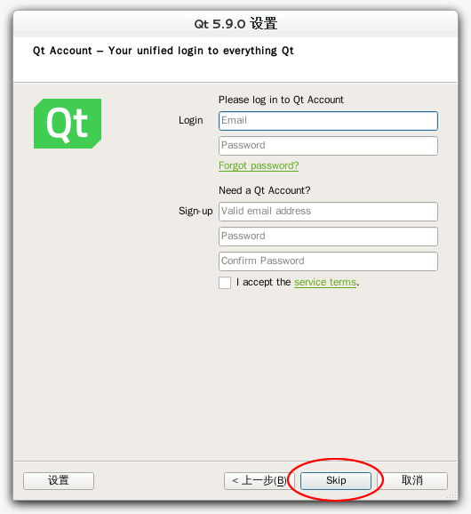
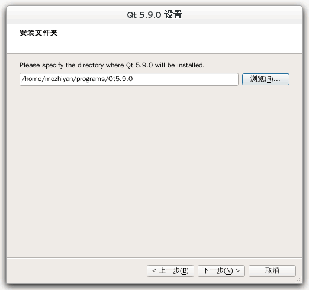
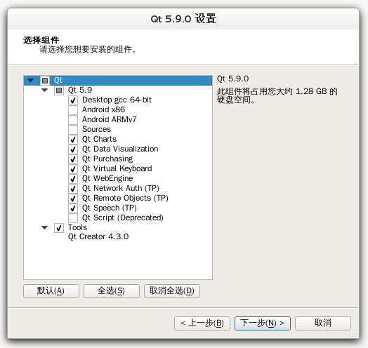
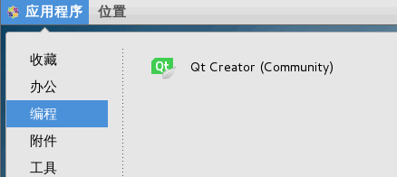

图解Qt安装（Linux平台）
Linux 发行版虽然众多，但 Qt 安装过程大同小异，本节以 CentOS 7 为例来演示 Qt 的安装。
在《Qt下载》一节中我们已经讲解了 Qt 安装包的下载方式，Qt 5.9.0 Linux 安装包的名称为 qt-opensource-linux-x64-5.9.0.run。
下载的 run 文件不一定具有可执行权限， 可以执行如下命令开启执行权限：
注意以下是以普通用户权限安装的，安装位置是 /home/用户名/Qt5.9.0/，如果希望安装到其他的目录（如 /opt/ 目录），是需要 root 权限的。
下面示范简单的普通用户安装方式，需要用户主目录 /home 所在磁盘分区至少剩余 2GB 空间。所示范的是 64 位安装包，使用的发行版是 CentOS 7（64 位）。
运行 qt-opensource-linux-x64-5.9.0.run 文件，根据向导一步步安装就可以了。关于 Qt 的安装需要说明以下几点。
Qt 的安装组件分为两部分：一部分是“Qt 5.9”分类下的，该分类包含的是 Qt 开发库，也就是动态链接库或者静态链接库；另一部分是“Tools”分类下的，该分类包含的是集成开发环境（可执行程序），也就是 Qt Creator（在 Windows 下还会有其它工具）
选择完了组件，根据向导一步一步操作就可以了。安装完成后，在左上角“应用程序 --> 编程”菜单中可以看到 Qt Creator，证明安装成功了。点击 Qt Creator，就可以开始 Qt 编程了。
在《Qt下载》一节中我们已经讲解了 Qt 安装包的下载方式，Qt 5.9.0 Linux 安装包的名称为 qt-opensource-linux-x64-5.9.0.run。
下载的 run 文件不一定具有可执行权限， 可以执行如下命令开启执行权限：
chmod +x /文件夹路径/qt-opensource-linux-x64-5.9.0.run
将“文件夹路径”替换为自己系统里该 run 文件的路径即可。然后可以直接点击运行该 run 文件，开始安装。注意以下是以普通用户权限安装的，安装位置是 /home/用户名/Qt5.9.0/，如果希望安装到其他的目录（如 /opt/ 目录），是需要 root 权限的。
下面示范简单的普通用户安装方式，需要用户主目录 /home 所在磁盘分区至少剩余 2GB 空间。所示范的是 64 位安装包，使用的发行版是 CentOS 7（64 位）。
运行 qt-opensource-linux-x64-5.9.0.run 文件，根据向导一步步安装就可以了。关于 Qt 的安装需要说明以下几点。
1) 注册和登录
Qt 在安装过程中会提示用户进行注册和登录，不用理会，跳过（Skip）即可，实际开发时不需要登录。

图1：Qt 安装过程中提示用户注册
图1：Qt 安装过程中提示用户注册
2) 安装路径
Qt 在安装过程中允许自定义安装路径，我将 Qt 安装在主目录下的 programs/Qt5.9.0 文件夹中，一般使用默认路径即可。

图2：指定 Qt 安装路径
图2：指定 Qt 安装路径
3) 选择安装组件
Qt 安装过程中最关键的一步是组件的选择，请看下图：

图3：Qt 组件
图3：Qt 组件
Qt 的安装组件分为两部分：一部分是“Qt 5.9”分类下的，该分类包含的是 Qt 开发库，也就是动态链接库或者静态链接库；另一部分是“Tools”分类下的，该分类包含的是集成开发环境（可执行程序），也就是 Qt Creator（在 Windows 下还会有其它工具）
| “Qt 5.9”分类下的开发库 | |
|---|---|
| 开发库 | 说明 |
| Desktop gcc 64-bit |
这是使用桌面版 GCC 64-bit 编译环境生成的 Qt 库，是 Qt 的核心，必须安装。 注意，虽然名字看起来像是 GCC 编译器套件，但实际上说的是 Qt 库的编译环境。大部分 Linux 发行版都会预装 GCC 编译器套件，所以 Qt 安装包没必要附带它们。 |
| Android *** | 这是针对安卓应用开发的 Qt 库，如果读者有安卓开发这方面需求可以自己选择安装，一般情况下用不到。 |
| Sources | Qt 的源代码包，除非你想阅读 Qt 的源码，否则不用安装。 |
| Qt *** |
Qt 的附加模块，大部分建议安装，这些附加模块括号里的 TP 是指 Technology Preview ，技术预览模块的意思，还处在功能测试阶段，不是正式版模块；附加模块括号里的 Deprecated 是指抛弃的旧模块，兼容旧代码使用的，一般用不到。这些附加模块读者可以选择部分或都勾选了安装，占用空间不大。 部分组件说明：
|
| “Tools”分类下的集成开发环境 | |
| 集成开发环境 | 说明 |
| Qt Creator 4.3.0 | 这是集成开发环境，强制安装的，以后所有的项目和代码都在 Qt Creator 里面新建和编辑。 |
选择完了组件，根据向导一步一步操作就可以了。安装完成后，在左上角“应用程序 --> 编程”菜单中可以看到 Qt Creator，证明安装成功了。点击 Qt Creator，就可以开始 Qt 编程了。

图4：Qt 安装完成
图4：Qt 安装完成
关注公众号「站长严长生」，在手机上阅读所有教程，随时随地都能学习。内含一款搜索神器，免费下载全网书籍和视频。

微信扫码关注公众号